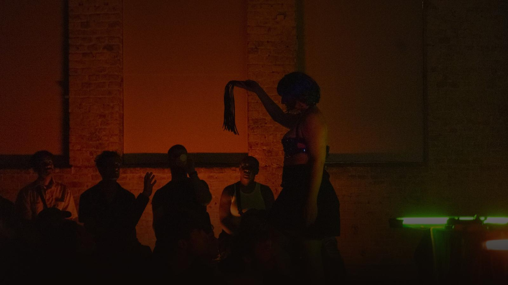
From the visceral nature of my poetry, "FERAL" emerges as a radical act: I want to create art pieces from my body. Transform myself into an object for your collection of beautiful fetishes. In the terrifying honesty of my unrestrained sexual desire, I choose to die in fragments of art, compost myself, and be reborn in the pleasure of others.
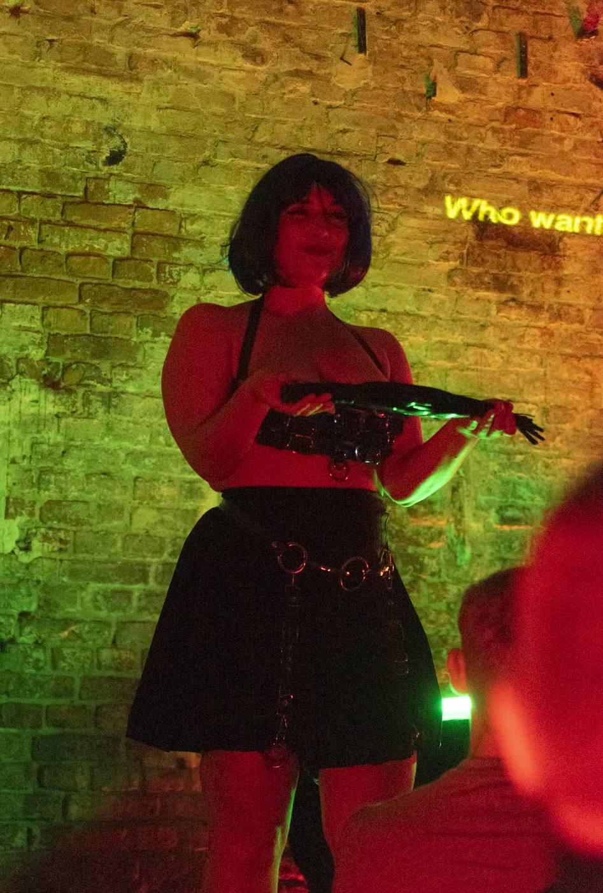
FERAL is a vocal-sound performance that delves into the processes of sexualization, objectification, and the empowerment of personal pleasure. Over the course of 30 minutes, the performer weaves a narrative of her journey — from a hypersexualized childhood to an adulthood where pleasure finds new avenues of exploration through domination, sex work, and BDSM.
The performance unfolds in an intimate setting, featuring a live sound recording and playback setup alongside other sex technologies that accompany the storytelling.
The piece premiered in Santiago, Chile, in January 2025 as part of VENTANA AL SUR, a live arts festival presented by Fundación Cuerpo Sur.
Since then it has toured internationally, including Belluard Bollwerk (Switzerland), Santarcangelo Festival (Italy), Plataforma (Berlin), Zürcher Theater Spektakel (Switzerland), and Boska Komedia / Divine Comedy Festival (Poland).
In December 2025, FERAL was presented in the PURGATORIO section of the 18th Boska Komedia (Divine Comedy) International Theatre Festival in Kraków, Poland — the edition's overarching theme was "Waiting for the Barbarians." Both performances sold out.
Days later, Konrad Berkowicz — Member of the Polish Sejm for Kraków, first vice-chairman of the far-right Nowa Nadzieja (New Hope) party and a leading figure within the Confederation coalition — publicly attacked the city and the Ministry of Culture for funding a "festival" whose protagonist he described, in scare quotes, as a "sex worker" whose "art" is based on "the experience of a dominatrix, fetishes, sex toys, and BDSM."
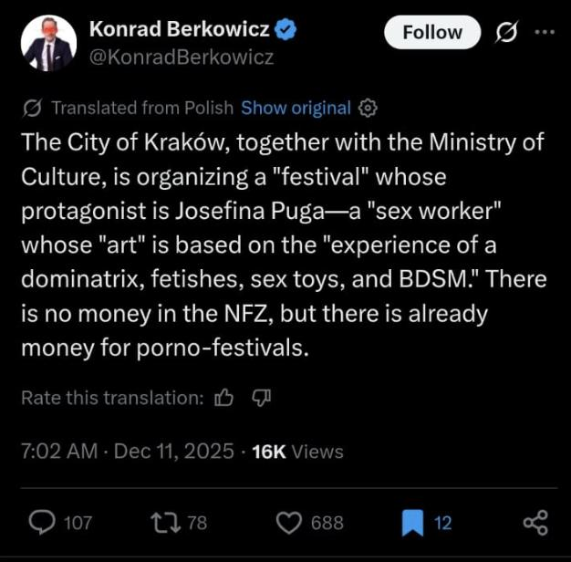
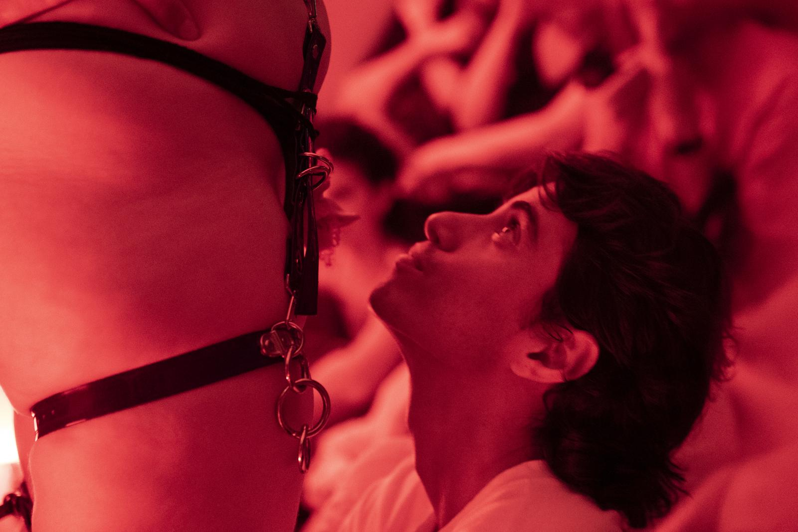
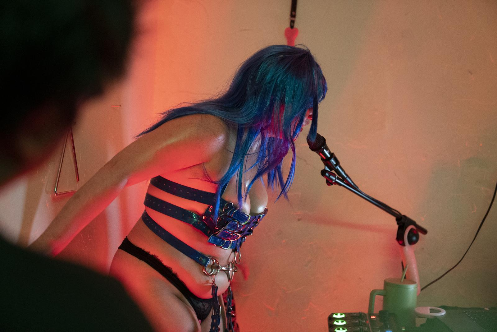
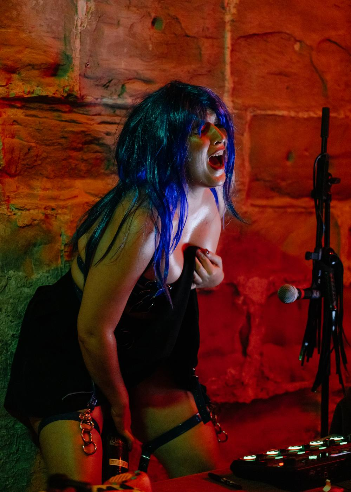
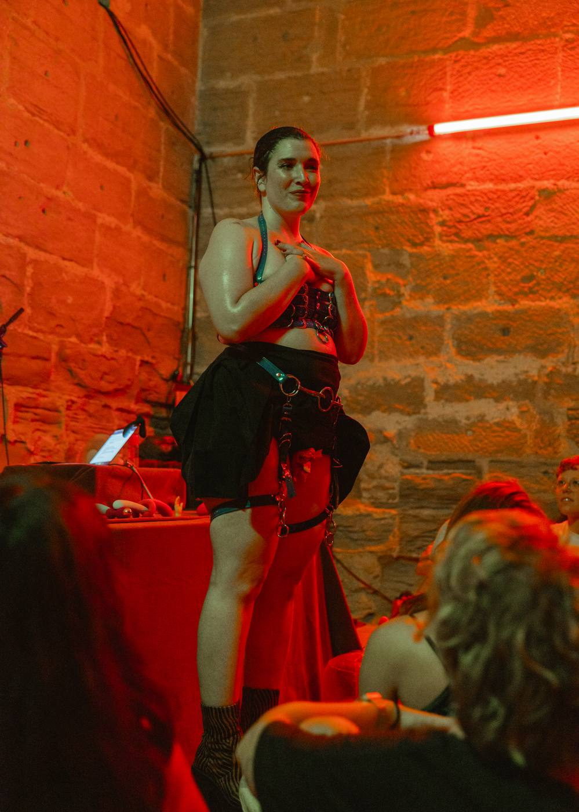
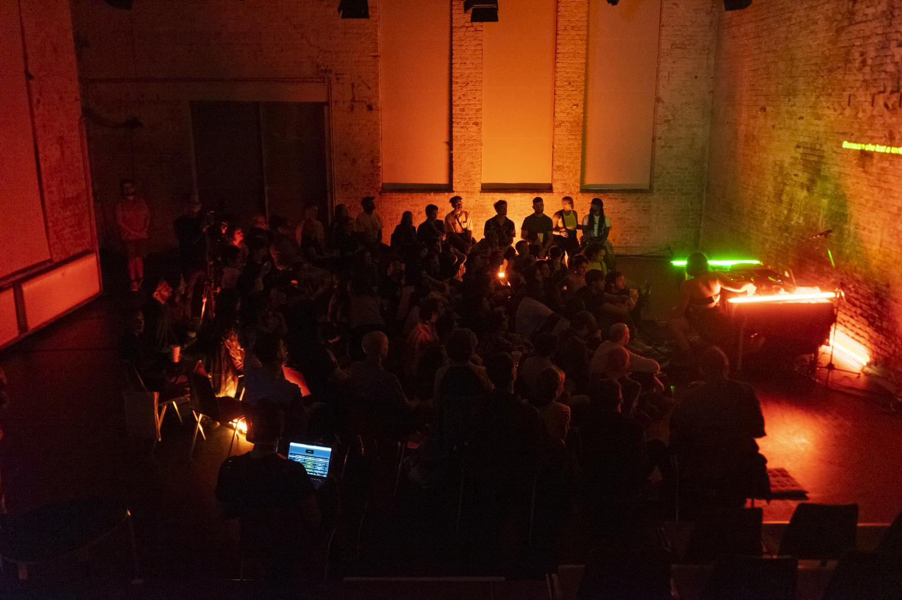
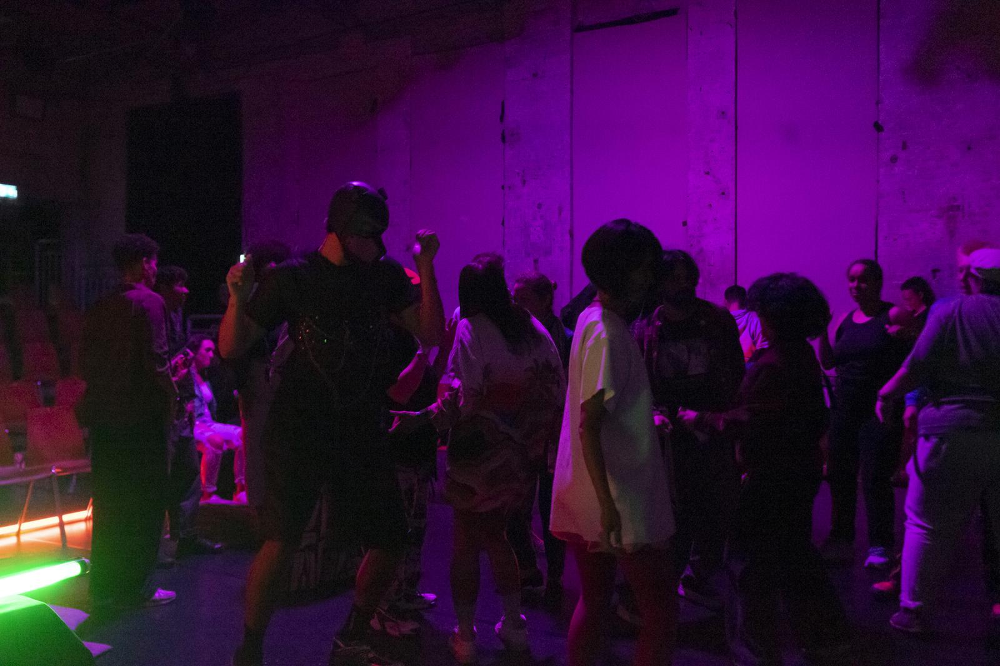
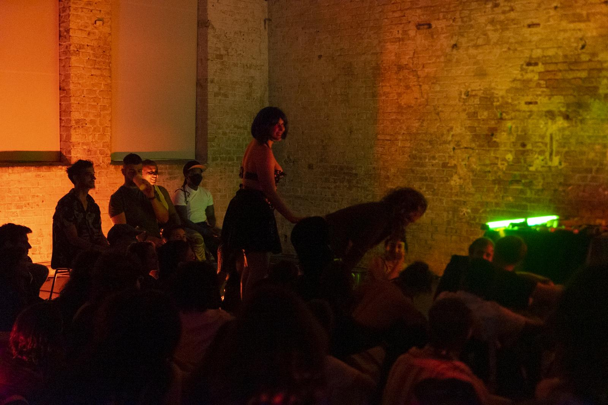
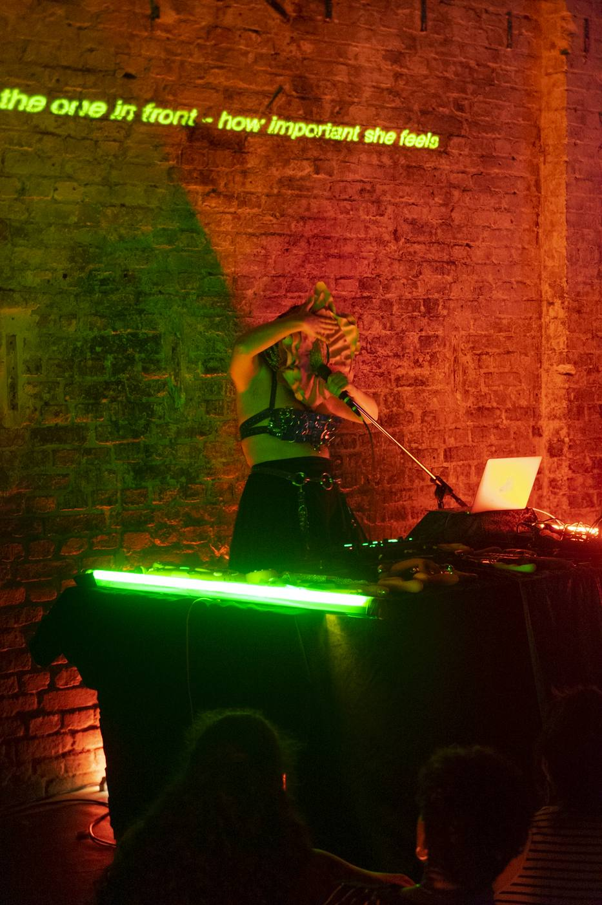
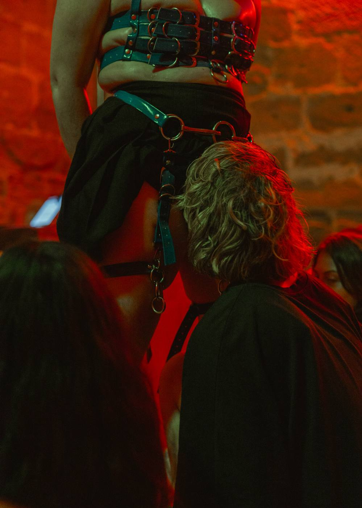
Working press covering the Fringe can request a comp ticket for FERAL. Tell us your outlet and preferred date and we'll confirm by email.
Request Press Ticket ↗Programming for your own venue or festival? Request a ticket to see FERAL live and we'll confirm by email.
Request Industry Ticket ↗Josefina Cerda is a Chilean performance artist, sound designer, and sex worker-dominatrix. Her work explores the relationship between body, sexuality, sound, and fantasy, addressing pleasure, love, and power dynamics through a critical and sensorial approach.
Her practice includes NSFW content and the exploration of domination and BDSM in intimate, professional, and performative contexts. She is currently a producer and associate artist at Fundación Cuerpo Sur, and co-directs the porn magazine Vieja Verde.
She has directed Radioafectiva (2023), FERAL (2025), and currently Te Amo, Puta (2026). Her sound design was recognized in 2023 with second place at World Stage Design, Canada.
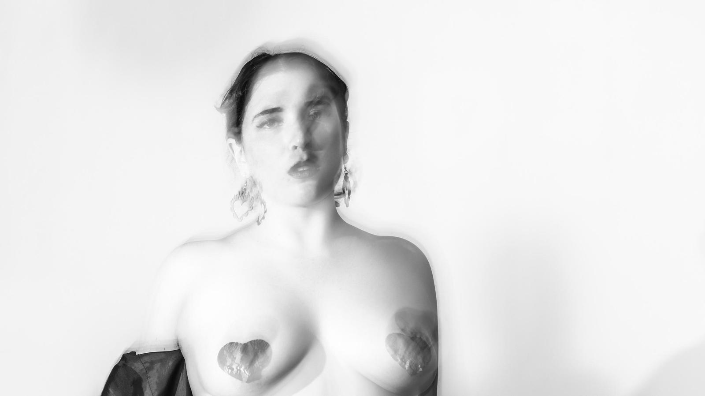